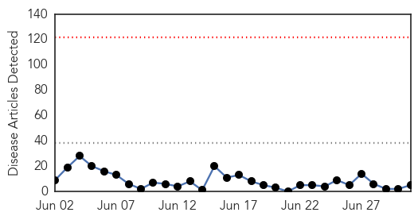
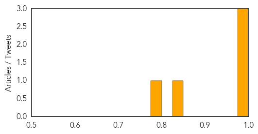

Dengue Fever
30-Day Web Trend
2 alerts, 0 warnings

30-Day Twitter Trend
3 alerts, 0 warnings

Article Locations

Article Confidences

Top Articles:
- 0.990
- Malaysia sets up task force to fight dengue as deaths rise
- 0.849
- Nation, News, The Philippine Star
- 0.760
- Anti-dengue activities geared up
- 0.736
- Special task force to combat dengue
- 0.699
- Special task force formed to address rising number of dengue cases – BorneoPost Online
- 0.683
- Multi-ministry task force to battle dengue
Top Tweets:
-
No tweets found for Jul 01, 2014
MERS
30-Day Web Trend
0 alerts, 0 warnings

30-Day Twitter Trend
0 alerts, 0 warnings

Article Locations

Article Confidences
Top Articles:
- 0.999
- GIVnews.com - Indonesian Perspective to Global Audience
- 0.988
- Saudi Arabia mulls banning camel imports from Africa
- 0.976
- Govt ready to deal with heat, coronavirus in Makkah
- 0.832
- Vietnam applies health check to Mideast visitors to prevent MERS
- 0.783
- Ministry inspects int’l quarantine work at Noi Bai airport
Top Tweets:
-
No tweets found for Jul 01, 2014